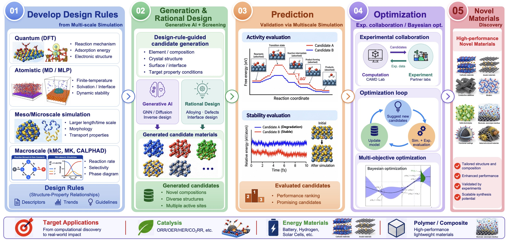
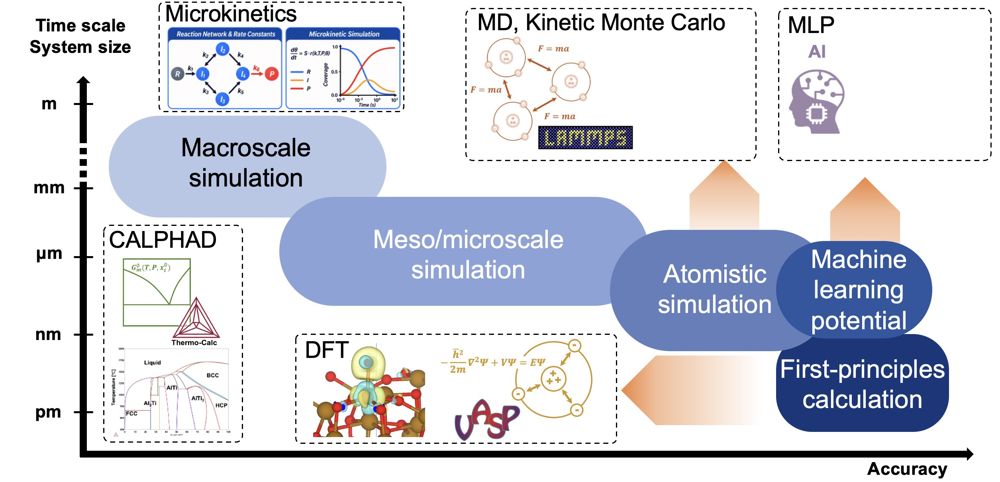
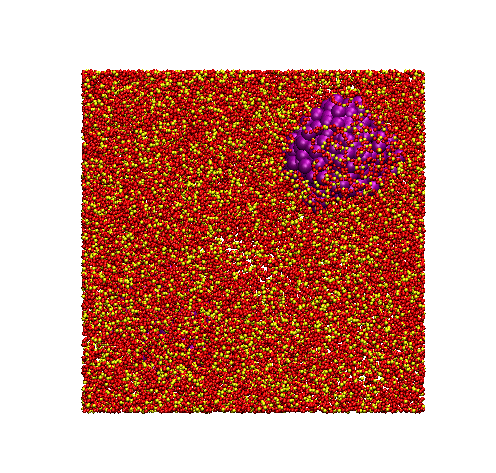
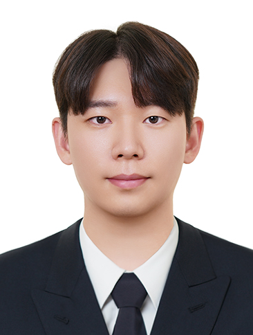

계산 모델링 및 소재 설계 연구실(CAMD Lab)은 멀티스케일 시뮬레이션과 인공지능 기술을 활용하여 소재의 특성과 작동 메커니즘을 이해하고, 이를 바탕으로 새로운 소재를 설계하는 연구를 수행합니다. 특히 촉매, 배터리, 센서 등의 에너지 소재와 기능성 유·무기 복합체의 설계 및 개발에 중점을 두고 있습니다.
Approach

Multiscale Simulation



Jungwoo Choi (최정우)
Assistant Professor
Department of Materials Innovation Engineering, Dankook University
Assistant Professor · Dankook UniversityDepartment of Materials Innovation Engineering
Postdoctoral Researcher · KISTAdvisors: Sang Soo Han and Donghun Kim
Visiting Scholar · The University of Texas at AustinDepartment of Chemistry · Advisor: G. Henkelman
Education
Ph.D. · KAISTMaterials Science and Engineering · Advisor: Hyuck Mo LeeThesis: Rational design of single atom catalysts through factor-based study: From formulating electronic factors to tailoring materials properties
M.S. · KAISTMaterials Science and Engineering · Advisor: Hyuck Mo Lee
B.S. · Korea UniversityMaterials Science and Engineering
Members
Principal Investigator
Jungwoo Choi (최정우)
Assistant Professor
Department of Materials Innovation Engineering, Dankook University
† Equal contribution · * Corresponding author · Last updated: October 2026
2026
Realistic Simulations of Energy Materials Using Foundation Models and Electrode-Potential Learning
J. Chae†, H. Kim†, K. Im†, H.-J. Lee†, S. Yang†, Y.-J. Lee, J. Choi, B. C. Yeo, D. Kim, H.-I. Ji, S. S. Han, B. Lee*, S. Ringe*, S. Kang*
ChemRxiv, 2026 (Preprint)
CO-AUTHOR
2026
Interfacial Cooperation-Driven Volcano Shifts in Ammonia Decomposition Revealed by Reaction-Aware Machine Learning Simulations
J. Choi, S. Kang, B. C. Yeo*, and D. Kim*
ChemRxiv, 2026 (Preprint)
FIRST AUTHOR
2026
Interfacial Cooperation–Driven Shifts of Volcano Relationships in Ammonia Decomposition
J. Choi, S. Kang, B. C. Yeo*, and D. Kim*
ACS Catalysis, 2026
FIRST AUTHOR
2026
Engineering MnNiPx Cathode via Dual Role of Mn: Simultaneous Enhancement of Activity and Intermittent Operation Durability
I-S. Kim†, J. Choi†, S. Lee, J. E. Park, C. Lee, J. Seo, J. H. Kwon, G. Doo, H. Park, D. Lee, W-C. Cho, C. Kim, N. V. Myung, S. S. Han, B-S. An*, M. Kim*, and H-S. Cho*
Advanced Functional Materials, 2026
FIRST AUTHOR
2026
Hierarchically Porous and Interconnected Ti3C2Tx MXene Networks via Interface-Directed Functionalization for Lithium-Sulfur Batteries
G. S. Lee, J. Choi, Y. H. Yoon, J. Balamurugan, S. P. Sasikala, G. G. Yang, T. Yun, G. B. Choi, C. W-L. Cheng, H. M. Lee, and S. Kim
ACS nano, 2026
CO-AUTHOR
2025
Optimizing Hybrid-phase IrO2 Catalysts with Ti for Enhanced Oxygen Evolution Reaction for Proton Exchange Membrane Water Electrolysis
Y. H. Yun†, J. Choi†, Y. Park, H. Park, G. Doo, M. Kim, S. S. Han, J. H. Park*, S. Lee*, C. Lee*, and H-S. Cho*
Small, 2025
FIRST AUTHOR
2025
Synergistic Composition and Surface Engineering of Ruthenium‐Cobalt Hydroxide Nanowires for Efficient Oxygen Evolution Catalysis
Y. J. Jang†, J. Choi†, J. H. Moon†, H. M. Lee*, and Y.K. Kim*
Small, 2025
FIRST AUTHOR
2025
Improved thermal stability of NbCoSn half-Heusler compounds via Sb doping-induced complementary point defect evolution
K. Jang, P. Dey, B. Dutta, H. Park, H-J. Son, J-I. Jang, M. K. Bhat, H. Jang, H. Kim, J. Choi, S. Zhang, R. B. Villoro, B. Berkels,. B. Kim, P-P. Choi, M-W. Oh, Y. S. Jung, J. W. Han, C. Scheu*, and C. Jung*
Chemical Engineering Journal, 2025, 518, 164845
CO-AUTHOR
2024
Facet-Controlled Pt3M Alloys as Enhanced Catalysts for Ammonia Oxidation Reaction: A Combined Theoretical and Experimental Study
J. Yoo†, J. Choi†, S. Choi, C. Lee*, and H. M. Lee*
ACS Catalysis, 2024
FIRST AUTHOR
2024
Controlling Mechanism of the Water–Gas Shift Reaction Activity Catalyzed by Au Single Atoms Supported on Multicomponent Oxides
J. Choi†, H. Choi†, JH. Lee, E. Kang, K. Shin, H. M. Lee*, and HY. Kim*
The Journal of Physical Chemistry C, 2024
FIRST AUTHOR
2024
To Elucidate the Effect of Alloying Elements for Enhanced Nitriding of Aluminum: A Multiscale Computational Study
J. Choi†, J. Yoo†, K. Kang*, and H. M. Lee*
Materials Chemistry and Physics, 2024
FIRST AUTHOR
2024
Heterogeneous Structure of Ni–Mo Nanoalloys Decorated on MoOx for an Efficient Hydrogen Evolution Reaction Using Hydrogen Spillover
D. Song†, J. Roh†, J. Choi, H. Lee, G. Koh, Y. Kwon, H. Kim, H. M. Lee, M. Kim*, and E. Cho*
Advanced Science, 2024, 2403752
CO-AUTHOR
2024
Electrical Resistivity Modification of Electrodeposited Mo and Mo-Co Nanowires for Interconnect Applications
J. H. Moon†, T. Kim†, Y. Lee†, S. H. Kim, Y. H. Kim, J-P. Ahn, J. Choi, H. M. Lee*, and Y. K. Kim*
Engineering, 2024, 32, 127-137
CO-AUTHOR
2023
The interfaces of Ag-rich and Cu-rich AgCu phases boost oxygen reduction activity
Y. Park†, C. Lee†, J. Choi†, P. W. Kang, C. Scheu, H. M. Lee, P-P. Choi, and C. Jung*
Applied Surface Science, 2023, 157949
FIRST AUTHOR
2023
Gold Single-Atoms Confined at The CeOX-TiO2 Interfaces With Enhanced Low-Temperature Activity Toward CO Oxidation
E. Kang†, J. Choi†, H. Choi†, J. Yun, J. H. Lee, M. Yoo, C. Kim, H. M. Lee*, and H. Y. Kim*
Nanotechnology, 2023, 34, 045703 (9pp)
FIRST AUTHOR
2023
Electrochemical Dealloying of Ni-rich Pt–Ni Nanoparticle Network for Robust Oxygen-Reduction Electrocatalysts
J. Yoo†, Y. Park†, J. Choi, J. Roh, K. Shin, H-S. Cho, E. Cho, C. Lee*, and H. M. Lee*
In Silico High-Throughput Screening of Ag-Based Electrocatalysts for Anion-Exchange Membrane Fuel Cells
J. Choi†, S. Kwon†, Y. Park, K. Kang, and H. M. Lee*
The Journal of Physical Chemistry Letters, 2021, 12 (24), 5660-5667
FIRST AUTHOR
2021
Monodisperse Carbon Nitride Nanosheets as Multifunctional Additives for Efficient and Durable Perovskite Solar Cells
D-W. Kim, J. Choi, J. Byun, J. T. Kim, G. S. Lee, J. G. Kim, D. Kim, P. Boonmongkolras, P. F. McMillan, H. M. Lee, A. J. Clancy*, B. Shin*, and S. O. Kim*